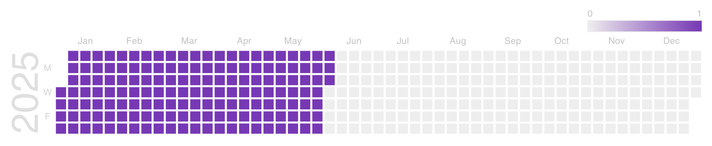
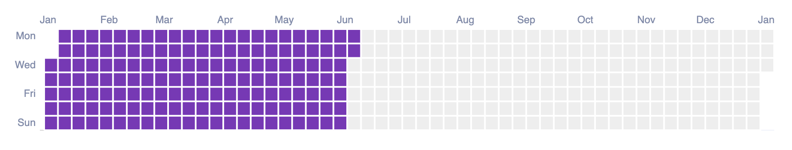

Motivation
I recently started to volunteer by contributing to a Svelte + TypeScript codebase, and since I’m completely new to Svelte, I wanted to build something in my spare time with Svelte 5 to test it out and see how it differs from my previous frontend experiences. On my dev job I do mostly Haskell backend code nowadays but I’ve been a frontend engineer for years, and used everything in production: Backbone, React, Angular, Vue and Elm, which I’ve been happily using for the last +5 years! 🌳
First impressions
I think Svelte lives up to its hype, I started to learn it by just using their tutorial in the Svelte website, and in a matter of only 10 hours of work, I was able to reproduce a fully fledged Svelte app, with Firebase and authentication just like the one I built in Elm for my personal use 3 years ago!
This means two things:
- Svelte is incredibly easy to learn! 💃🏻
- Svelte feels like just building HTML apps, but with magical bits ✨
I can’t state how happy I am of not having to type
classNameever again! 😅
For comparison, the Elm app currently has ~900 LOC, whereas the Svelte app has exactly 187 LOC 🤯, divided into 120 LOC of TypeScript and 67 LOC of template (Svelte HTML). This feels amazing, but is it really a fair comparison? No, and that is why in the following sections of the blogpost I am going to describe the pros and cons of both implementations!
Firebase
My original app was just a simple calendar view in which I could mark how many chapters of a book I read a single day, so that I could build a habit to read every day. I wanted my app to live on the Cloud and to be purely frontend based. I also did not want to handle authentication, etc, so I decided to use Firebase and also try out its realtime databases.
For Elm, I used the elm-firestore library, which is just amazing and let’s me write completely TYPE SAFE Elm queries to interact with Firestore, here is an example of such a query:
let
query : Query.Query
query =
Query.new
|> Query.collection "readings"
|> Query.orderBy "date" Query.Descending
|> Query.where_
(Query.compositeFilter Query.And
(Query.fieldFilter "date" Query.GreaterThanOrEqual (Query.timestamp <| firstDayOfYear model.displayYear))
[ Query.fieldFilter "date" Query.LessThanOrEqual (Query.timestamp <| lastDayOfYear model.displayYear) ]
)
in
model.firestore
|> Firestore.root
|> Firestore.collection "users"
|> Firestore.document uid
|> Firestore.build
|> Result.toTask
|> Task.andThen (Firestore.runQuery decoder query)
|> Task.attempt FetchChaptersWorking with this library is amazing and using all the power of Elm and its famous compiler error messages, it was a delight to interact with Firestore (Firebase’s document storage) in such a way. A huge part of those extra FEW hundred lines of code was needed to Decode and Encode data from/to JSON, this is a price we have to pay in Elm to be completely pure and type safe but I believe in the long run it is completely worth it.
However, the sad part is that since this library uses Firestore RESTful API, which is officially said to be out of support for realtime update, I could not leverage this functionality in my Elm application. 😢
For Svelte, I used the svelte-firebase-state package, and I was really impressed with it. Have a look at exactly the same query I showed you above, but in Svelte:
const readings = new CollectionState<DocumentData, Reading>({
auth,
firestore,
listen: true,
query: () => [
where('date', '<=', subHours(new UTCDate(selectedYear + 1, 0, 1), 1)),
where('date', '>=', new UTCDate(selectedYear, 0, 1)),
],
path: (currentUser) => `users/${currentUser?.uid}/readings`,
})What is amazing about this is that it brings with it a new reactivity model that you need to get used to, it feels intuitive and easy but you need to be aware of some footguns. For example, if I wanted to use the last read chapter as a selection for the <select> elements I had on the page, I needed to use the new $effect rune from Svelte 5:
$effect(() => {
const lastRead = readings?.data?.at(-1)
if (lastRead) {
selectedBook = lastRead.book
selectedChapter = lastRead.chapter
}
})This is not bad per se but I know that state and derived state can go out of hand REALLY quickly, that is why I value The Elm Architecture (TEA, for short) so much, because it makes you reason about you application code and your data in a simpler, completely different way!
elm-ui vs. Tailwindcss
This section is a bit offtopic, because I love Tailwind CSS, but I also love elm-ui. In both applications, I did not write a single line of CSS, and both look great!
If you don’t know about elm-ui, I created an Egghead tutorial about it, it is an incredible way to create styles in a declarative and idiomatic way within Elm, but that it does not force you to know/understand all the ins and outs of CSS. I thoroughly recommend it! 💅🏻
For example, here is how simple it was to have a responsive view with elm-ui:
case ( device.class, device.orientation ) of
( Phone, Portrait ) ->
column [ width fill, centerY, spacing 10 ]
[ row [ spacing 10, centerX ] [ small userEmail, viewYears, logOut ]
, row [ spacing 10, centerX ] [ viewBookSelect, viewChapterSelect ]
, row [ spacing 10, centerX ] [ viewDatePicker, viewBtn ]
, el [ centerX, width (px 400), height (px 200), scrollbarX ] node
]
_ -> -- other viewsAt work, we use Tailwind CSS with Elm, and for this Svelte app, I decided to use SvelteKit, since it seems to be the standard for building Svelte apps, and its Tailwind CSS support is amazing, I had to do very little tweaking to have it working, JavaScript tooling has really improved in the last years! 🙌🏻
elm-charts vs. google-web-components
The crown jewel of this small application is, without a doubt, it’s calendar component. On its original version, I also decided to use the Google Calendar web component for simplicity, since I wanted to see little squares for each day I read, just like we do in our Github contributions graph. Here’s how it looks:

Even though Svelte has excellent support for Web Components, I stumbled upon a very weird and not very well documented issue, you need this code to make pretty much any Web Component to work within Svelte:
onMount(async () => {
await import('@google-web-components/google-chart')
})That took a shameful amount of time to figure out and I felt really stupid. 😢
Elm also has excellent support for Web Components, but after Google breaking its library a few times while updating dependencies (I know, right 😅), I decided for the Elm app to get rid of it and try out elm-charts instead.
This is also not a fair comparison, and a few extra hundred of lines of Elm code come by building the calendar chart by hand, similar to a heatmap. elm-charts is like the analog of D3.js but for Elm, it is a beautiful library and very potent! 🚀
Here is what the end result looked like:

As you can see, it looks pretty similar, but you have fine grained control about everything, for example, I was able to display the days of the week from Monday to Sunday, something currently the Google Calendar chart does not allow you to do. 📆
The simplicity of the Svelte code here is very nice:
{#if readings.loading}
<Loading />
{:else}
<div class="flex flex-row flex-nowrap overflow-x-scroll">
<google-chart type="calendar" {options} {data}></google-chart>
</div>
{/if}Although I’m not a big fan of templating (I still have nightmares with Angular 🤮), I have to recognise that Svelte seems to have picked up the best parts of Vue, React and other frontend frameworks and it feels really simple and elegant to build your views like this (as opposed to JSX, which also took its time to be loved 💔).
JavaScript’s “standard” library
It has been a while ago since the last time I had to write new JavaScript or TypeScript code, so I was really hoping some problems with the language itself would be a thing of the past, for example, here is how I conditionally render the chapter selector each time you pick a book in the UI in Elm:
select [ onInput <| SelectChapter << Maybe.withDefault 0 << String.toInt ] <|
List.map
(\chapter ->
option
[ Html.Attrs.selected <| chapter == selectedChapter ]
[ Html.text <| fromInt chapter ]
)
(List.range 1 <| getNumChapters selectedBook)You might not be very familiar with this syntax, but once you get used to it, it is quite straightforward. Did you notice the use of List.range? 👀
When translating this code to TypeScript, I COULD NOT BELIEVE it is 2025 already and JavaScript still does not have a built in range function… I mean… come on! Yes, we have some sort of proposal to bring Iterator.range in Stage 2, but very far away from being able to use it natively! 🥹 I had to use core-js and manually patch TypeScript 💀 to be able to use it in the Svelte app, and the result was not pretty…
<Select labelText="Year" bind:selected={selectedYear} onchange={onChangeYear}>
{#each Iterator.range(2020, new UTCDate().getFullYear(), { inclusive: true }) as value}
<SelectItem {value} />
{/each}
</Select>The API is far from perfect, but it was not as annoying as having to deal with Dates in JavaScript again… In Elm, all dates are UTC, and since it is a language that compiles down to JS, its API for working with Date and time is much nicer than JavaScript’s, have a look at the Svelte code:
const readingsData = $derived(
readings?.data?.map(({ date, book, chapter }) => {
const d = toDate(date.toDate(), utc) // convert to UTC
return [
d,
1, // the below snippet builds the tooltip for the calendar chart
`<div style="font-size: 1rem;padding: 0.75rem;">
${format(d, 'MMMM d, yyyy')}: <strong>${book} ${chapter}</strong>
</div>`,
]
})
)I had to rely on not one, but TWO JS libraries to format the dates properly and also maintain the coherence of the UTC dates, the two being the indispensable date-fns and also in this case @date-fns/utc.
I know there is a brighter future ahead with the Temporal API and such, but I wish we had improved more here on the JavaScript side…
Type safety
Ok so, Svelte is pretty great… but, what is my main complaint? TypeScript 😁 (please bear with me haha). The following code in the application is valid and it actually works:
async function handleRead() {
readingId = await readings.add({
book: selectedBook,
chapter: selectedChapter,
date: Timestamp.fromDate(selectedDate),
})
}Besides having to mutate $state data etc, which I can bear, where is the error handling? Nothing prevented me from writing (and shipping to production!) such code, because it is on YOU, the developer, the responsibility for error handling and making sure things don’t break. For example, wrapping async code in try { ... } catch { ... } finally { ... } blocks, etc…
Besides, even when TypeScript is able to infer correctly sometimes the types in the application, it can be completely overriden by the developer with as manual castings, etc. Such escape hatches simply DO NOT EXIST in Elm. Elm is a language with Hindley-Milner type inference and as such, is far superior to TypeScript. Bear in mind that the “no runtime errors” philosophy of Elm is for me still one of its strongest selling points. 💪🏻
Have a look at the following Elm code from the app:
case readings of
NotAsked ->
el [ centerY, centerX ] <|
button btns { label = text "GOOGLE SIGN IN", onPress = Just LogIn }
Failure message ->
el [ centerY, centerX, Font.color <| rgb255 255 0 0 ] <|
text (httpErrorToString message)
Loading ->
Loading.render Spinner
-- rest of the codeBesides having awesome pattern-matching super powers, every single type that is returned from an Elm library, is going to be a Maybe, a Result type, or some other type that we are going to forcefully have to UNWRAP ourselves to make sure it works, error handling is enforced by the compiler! 🤖
The Model-View-Update followed by TEA needs some time to wrap our head around it, but basically, when I get back from my ReadChapter message, I need to pattern match on it:
ReadChapter (Ok chapter) ->
-- if we succeed reading a chapter we just append it to the beginning of the list
( { model | readings = RemoteData.map ((::) chapter) model.readings }, Cmd.none )
ReadChapter (Err _) ->
-- in this particular case, I know a failure is due to trying to record the same reading twice
( { model | readings = Failure <| BadBody "You tried recording the same reading twice, refresh the page!" }, Cmd.none )And therefore I always need to handle explicity what happens, not only in the happy path (as shown in the TypeScript/Svelte snippet above), but also ALL possible states/scenarios when things go wrong.
Elm’s philosophy truly helps you make impossible states actually impossible!
Conclusion
I have to say, Svelte has sparkled back in me the excitement for web development, this is very important for me and it has been years since the last time I felt this joy, probably the last time I felt it was when learning Elm a few years ago. 🎉
If I had to choose a JavaScript/TypeScript frontend framework for my next app, I would probably never use React again (and this is huge!) and pick Svelte instead. However, as mentioned in the previous section, TypeScript is still MILES behind from the type safety of Elm. Therefore, even despite the verbosity of the code, if I REALLY cared about the correctness and maintainability of the application I am going to write, and I want to sleep well at night rest assured that nothing is going to blow up, I would still pick Elm for my frontend development.
Obviously, both Elm and Svelte have their tradeoffs (for example, Elm’s foreign function interface with JavaScript is very limited) but I hope I have presented them objectively enough in this post and that you enjoyed it!
If you found joy in this blogpost, share it in your social networks and follow me on Twitter and BlueSky! 🦋